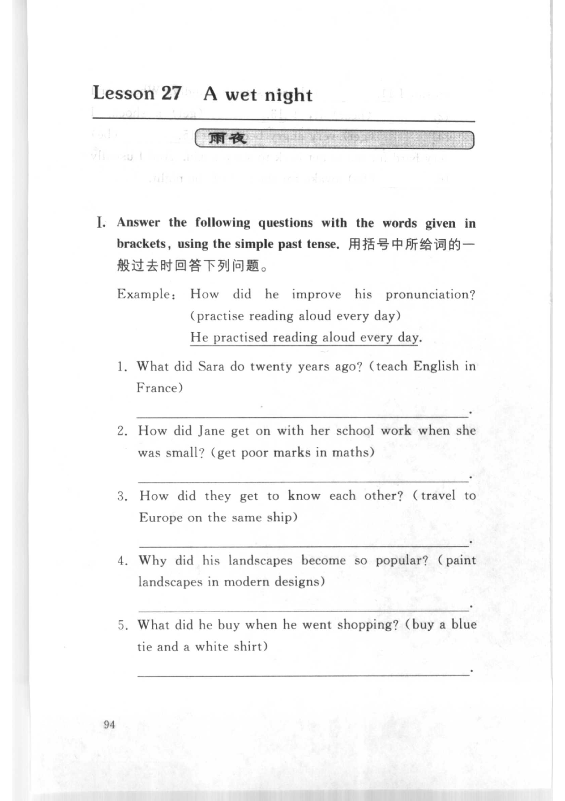
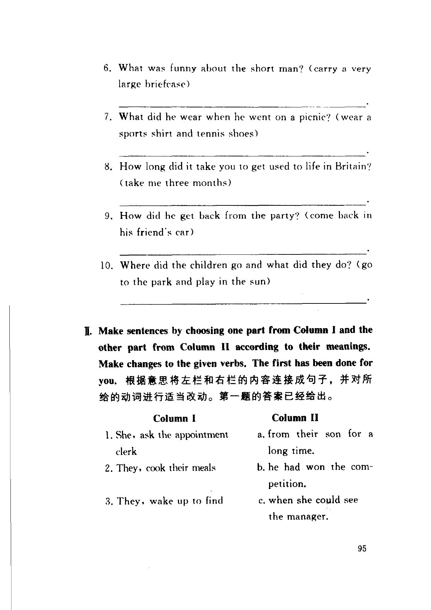
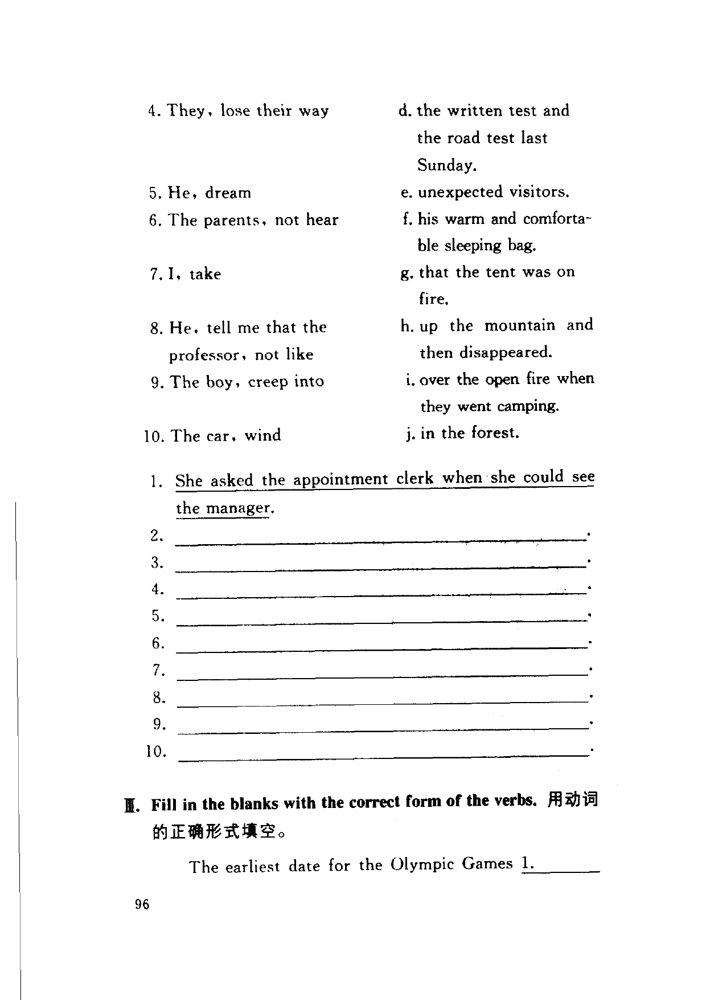
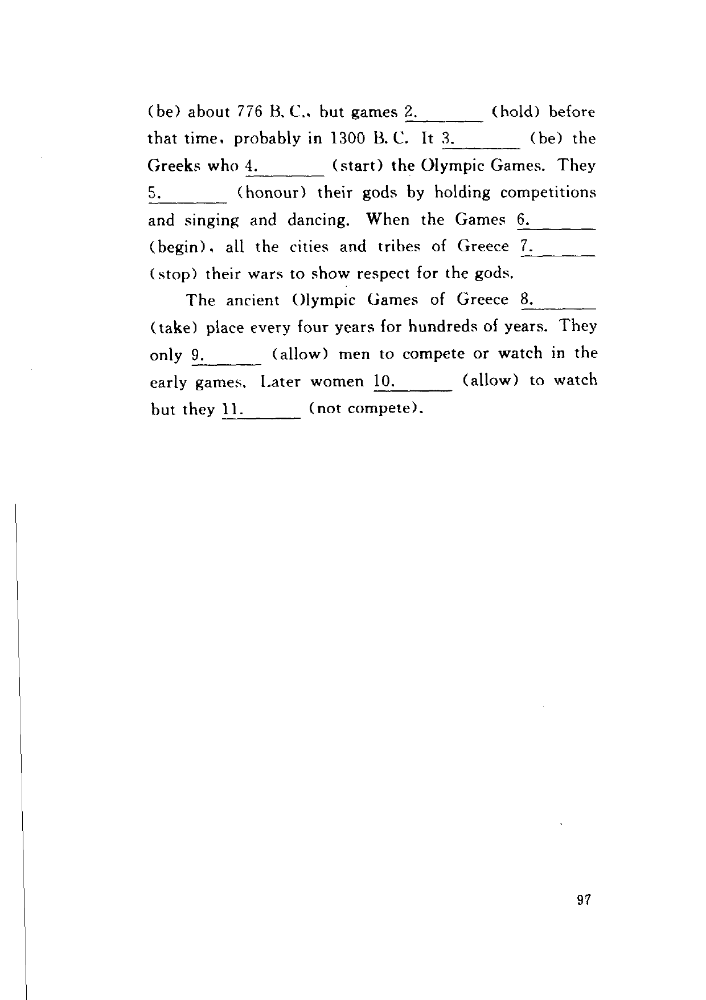

Grammar exercises · 语法练习
I. Answer the following questions with the words given in brackets, using the simple past tense.
用括号中所给词的一般过去时回答下列问题。
Example: How did he improve his pronunciation? (practise reading aloud every day)
He practised reading aloud every day.
-
I. Simple past — What did Sara do twenty years ago? (teach English in France)
-
I. Simple past — How did Jane get on with her school work when she was small? (get poor marks in maths)
-
I. Simple past — How did they get to know each other? (travel to Europe on the same ship)
-
I. Simple past — Why did his landscapes become so popular? (paint landscapes in modern designs)
-
I. Simple past — What did he buy when he went shopping? (buy a blue tie and a white shirt)
-
I. Simple past — What was funny about the short man? (carry a very large briefcase)
-
I. Simple past — What did he wear when he went on a picnic? (wear a sports shirt and tennis shoes)
-
I. Simple past — How long did it take you to get used to life in Britain? (take me three months)
-
I. Simple past — How did he get back from the party? (come back in his friend's car)
-
I. Simple past — Where did the children go and what did they do? (go to the park and play in the sun)
II. Make sentences by choosing one part from Column I and the other part from Column II according to their meanings. Make changes to the given verbs. The first has been done for you.
根据意思将左栏和右栏的内容连接成句子，并对所给的动词进行适当改动。第一题的答案已经给出。
Column I
1. She, ask the appointment clerk
2. They, cook their meals
3. They, wake up to find
4. They, lose their way
5. He, dream
6. The parents, not hear
7. I, take
8. He, tell me that the professor, not like
9. The boy, creep into
10. The car, wind
Column II
a. from their son for a long time.
b. he had won the competition.
c. when she could see the manager.
d. the written test and the road test last Sunday.
e. unexpected visitors.
f. his warm and comfortable sleeping bag.
g. that the tent was on fire.
h. up the mountain and then disappeared.
i. over the open fire when they went camping.
j. in the forest.
Example: She asked the appointment clerk when she could see the manager.
-
II. Columns — 1. She, ask the appointment clerk + c.
-
II. Columns — 2. They, cook their meals + ?
-
II. Columns — 3. They, wake up to find + ?
-
II. Columns — 4. They, lose their way + ?
-
II. Columns — 5. He, dream + ?
-
II. Columns — 6. The parents, not hear + ?
-
II. Columns — 7. I, take + ?
-
II. Columns — 8. He, tell me that the professor, not like + ?
-
II. Columns — 9. The boy, creep into + ?
-
II. Columns — 10. The car, wind + ?
III. Fill in the blanks with the correct form of the verbs.
用动词的正确形式填空。
The earliest date for the Olympic Games 1. (be) about 776 B.C., but games 2. (hold) before that time, probably in 1300 B.C. It 3. (be) the Greeks who 4. (start) the Olympic Games. They 5. (honour) their gods by holding competitions and singing and dancing. When the Games 6. (begin), all the cities and tribes of Greece 7. (stop) their wars to show respect for the gods. The ancient Olympic Games of Greece 8. (take) place every four years for hundreds of years. They only 9. (allow) men to compete or watch in the early games. Later women 10. (allow) to watch but they 11. (not compete).
-
III. Verb forms —
1.(be) -
III. Verb forms —
2.(hold) -
III. Verb forms —
3.(be) -
III. Verb forms —
4.(start) -
III. Verb forms —
5.(honour) -
III. Verb forms —
6.(begin) -
III. Verb forms —
7.(stop) -
III. Verb forms —
8.(take) -
III. Verb forms —
9.(allow) -
III. Verb forms —
10.(allow) -
III. Verb forms —
11.(not compete)
Original images · 原图对照
Expand a page to compare it with the transcription. Open the original in a new tab to zoom in.
展开原图核对文字，也可以在新标签页打开原图放大查看。
Book page 94 · Exercise I (simple past, items 1–5)
Open original · 打开原图 ↗ Download original · 下载原图


Book page 95 · Exercise I (simple past, items 6–10) and Exercise II (columns, Column I and II)
Open original · 打开原图 ↗ Download original · 下载原图


Book page 96 · Exercise II (columns, items 1–10) and Exercise III (verb forms, blank 1)
Open original · 打开原图 ↗ Download original · 下载原图


Book page 97 · Exercise III (verb forms, blanks 2–11)
Open original · 打开原图 ↗ Download original · 下载原图


Your notes and answers
Use this space for longer responses or exercises that do not have an individual answer box.